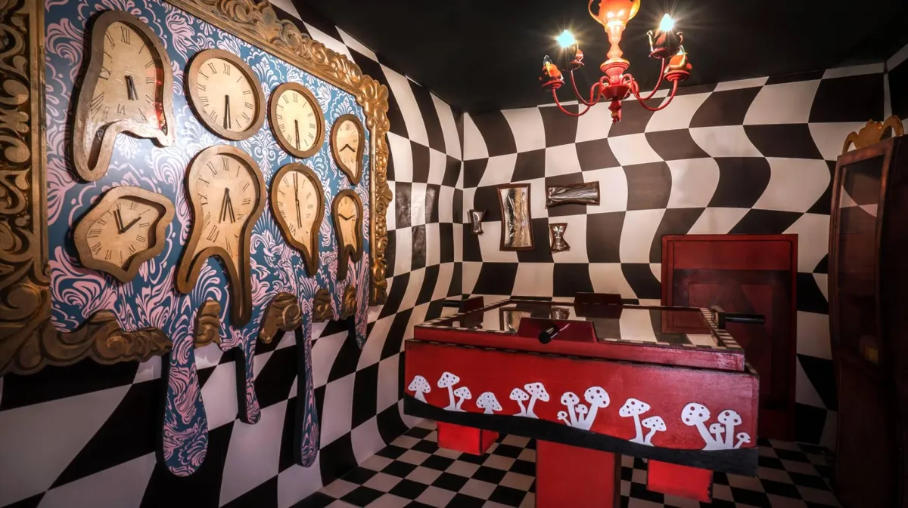
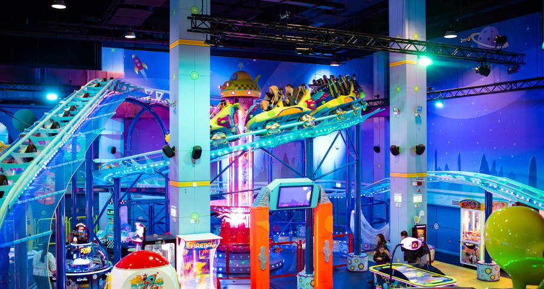
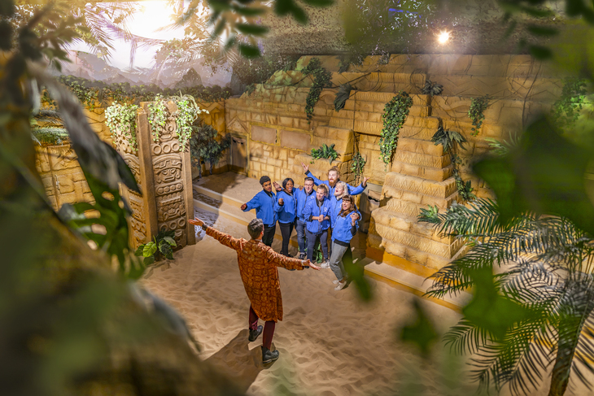
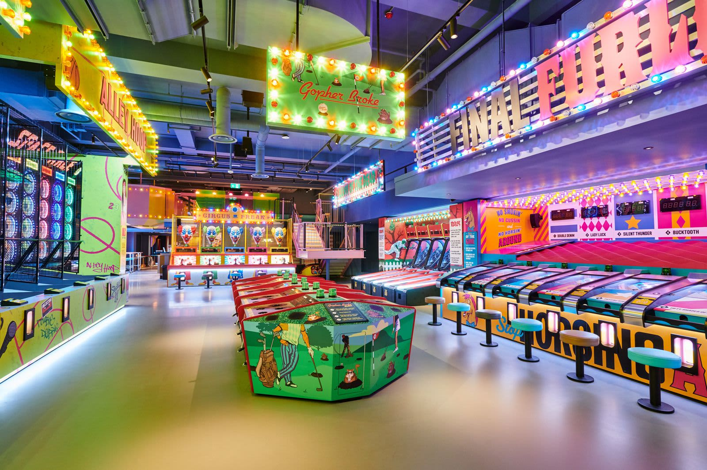
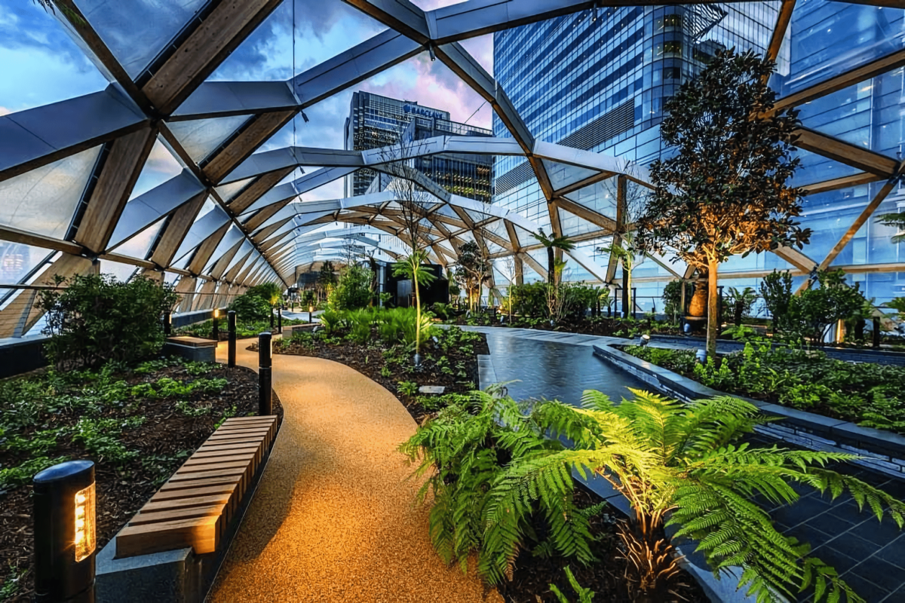
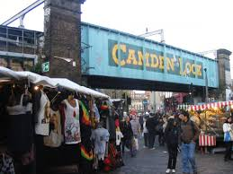

Toca Social - The Ultimate Football Experience
For a fun day out with friends, check out Toca Social! A mix of football and tech for a super fun, competitive experience. Whether you're a football pro or just starting out, you’ll love it. Click here for more info
The Cube Canary Wharf
Experience one of the most exciting escape rooms in London! Challenge yourself and your friends in The Cube at Canary Wharf. It’s fun, thrilling, and a great test of your puzzle-solving skills. Click here for more info
Bubble Planet
Step into a world of bubbles! Bubble Planet offers an immersive experience filled with beautiful and colorful bubbles. Perfect for all ages! Click here for more info

Frameless Immersive Art Experience
Walk through and experience art like never before in this immersive exhibition where the art surrounds you. Great for art lovers looking to explore classic works in a unique way. Click here for more info

Game Over London
Enter the world of gaming with Game Over London. Play all your favorite arcade games, from retro classics to modern hits, in one awesome location. Click here for more info

Babylon Park London
Experience the thrill of indoor adventure at Babylon Park, featuring interactive rides and attractions for everyone to enjoy. Click here for more info

The Crystal Maze Live Experience
Test your skills in a fun, live-action version of the famous TV show, The Crystal Maze. Solve puzzles, face physical challenges, and race against the clock! Click here for more info

Fairgame
Fairgame is an exciting interactive experience where you and your friends can compete in a series of games, from fairground-style to modern challenges! Click here for more info
Clays Canary Wharf
Looking for a unique night out? Clays Canary Wharf offers a stylish space to enjoy clay pigeon shooting in a friendly, social setting. Click here for more info

Canary Wharf Sky Garden (Free)
Enjoy stunning panoramic views of London from the Canary Wharf Sky Garden. It’s free to visit and offers an incredible view of the city’s skyline. Click here for more info
Portobello Road Market
Explore the vibrant and historic Portobello Road Market, offering everything from antiques to fresh produce. It’s one of London’s best-known markets. Click here for more info

Camden Lock Market
Visit Camden Lock Market for a unique shopping experience. Browse through fashion, food, art, and vintage items from around the world. Click here for more info
Deer Spotting in Richmond Park
Get close to nature and enjoy a peaceful day in Richmond Park, where you can spot wild deer and other animals. Perfect for a relaxing day outdoors! Click here for more info